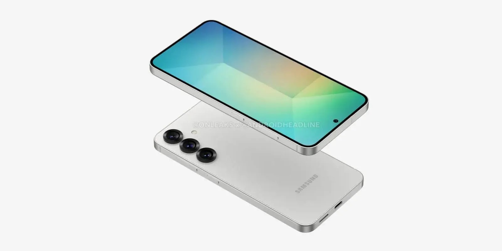
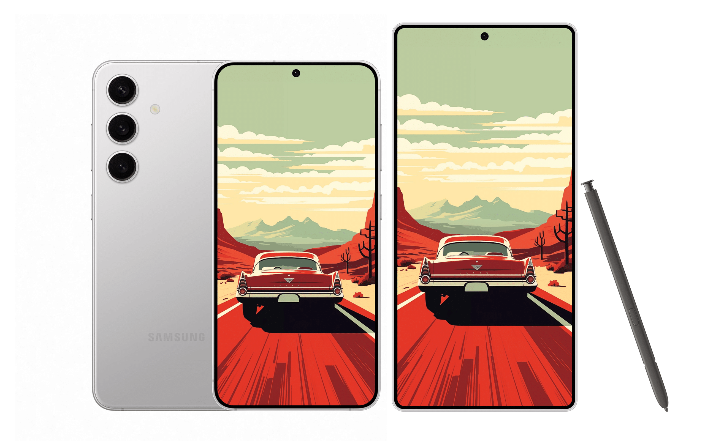

Si además de estar al tanto de las novedades de Android eres de los que también mira el entorno iOS, ya te habrás enterado de que este año circulan rumores persistentes sobre un posible iPhone Slim para la próxima campaña. Lo que quizás te sorprenda más es enterarte de que Samsung podría estar considerando unirse a la tendencia del adelgazamiento. 2025, el año de la cura de adelgazamiento para los premium De acuerdo a lo que informan en ETNews, Samsung estaría desarrollando un modelo más delgado para competir con ese iPhone Slim. En realidad, no hace tanto tiempo observábamos que el Galaxy S25 FE podría presentarse con un diseño más esbelto debido a ciertas modificaciones en la batería.  No se sabe con certeza si este sería el modelo que Samsung utilizaría para rivalizar con el iPhone 17 Slim, ya que, por un lado, se menciona que podría presentarse en abril, y considerando el calendario de lanzamientos de este año, el próximo FE debería arribar al mercado más tarde, probablemente en la segunda mitad del año o incluso en el último trimestre. Por otra parte, se afirma que el iPhone Slim reemplazaría al iPhone Plus, pero para Samsung no tendría mucho sentido que el modelo delgado reemplazara al S25+, ya que el Galaxy S24+ ha sido el dispositivo premium que más ha crecido en ventas este año. Smartphones Galaxy S24 De acuerdo con un filtrador confiable como Jukanlosreve en su cuenta en X, lo razonable sería que este año, Samsung mostrara un Galaxy S25 más delgado, sea cual sea, tras la presentación a principios de año de los tres modelos premium de costumbre. Este se ofrecería en una cantidad restringida de unidades, (como ya sucedió con el Galaxy Z Fold6 Special Edition), y posteriormente, la serie S26 se adaptaría cuando sea necesario, dependiendo de la recepción que haya tenido este modelo Slim.  De cualquier manera, todo sugiere que 2025 será el año en el que la competencia de los smartphones premium se reanude en el ámbito de los milímetros de espesor y no únicamente en el de los megapíxeles y las funcionalidades de las cámaras.